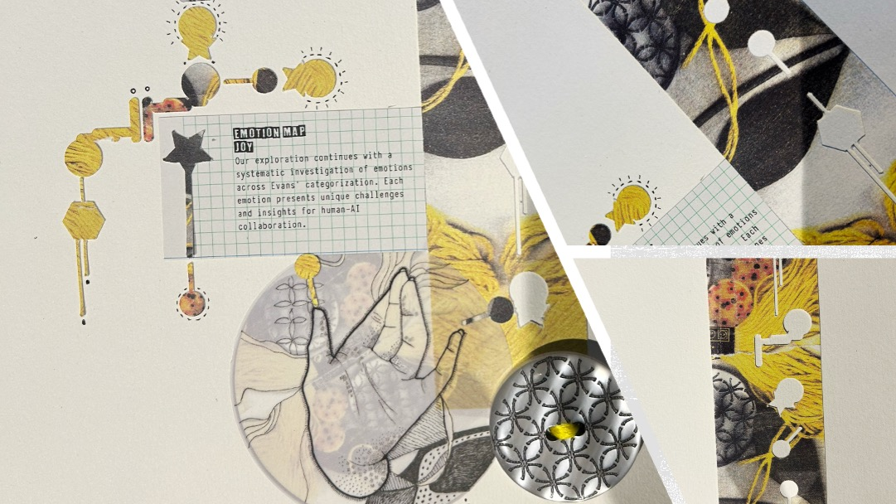

Six basic emotional states interpreted by an artificial system under a shared
set of visual and structural constraints. Each section documents the behaviour
of a live system displayed on a physical, landscape‑oriented HyperPixel unit.
+
Joy
Primary affect
Behavioural interpretation · physical HyperPixel specimen

Source collage
Expansion, resonance, and the amplification of connection across a
horizontally distributed field.